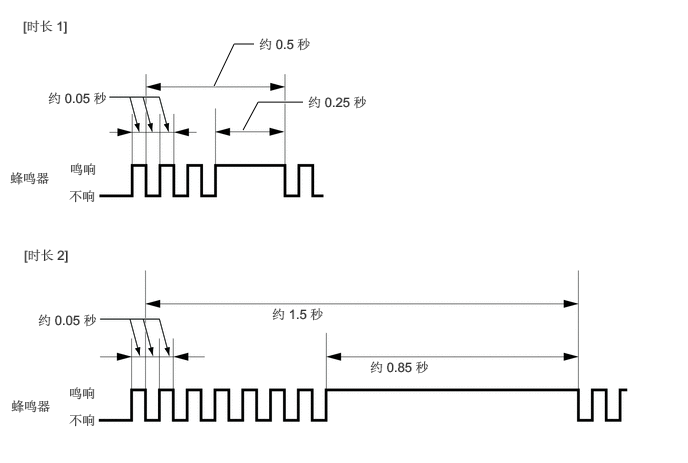

工作原理
根据检测距离和检测区域，1 号间隙警告蜂鸣器的鸣响模式将变化。
| 检测区域 | 检测距离
(mm (in.)) |
蜂鸣器鸣响模式 | ||
|---|---|---|---|---|
| 鸣响
(ms) |
不响
(ms) |
|||
| 前车角 | 长 | 700 +/- 70 至 500 +/- 50（27.6 +/- 2.8 至 19.7 +/- 2.0） | 200 | 200 |
| 中 | 500 +/- 50 至 300 +/-30（19.7 +/- 2.0 至 11.8 +/-1.2） | 100 | 100 | |
| 短 | 300 +/-30 或更少（11.8 +/-1.2 或更少） | 持续鸣响 | 0 | |
| 后车角 | 长 | 600 +/- 60 至 450 +/- 50（23.6 +/- 2.4 至 17.7 +/- 2.0） | 200 | 200 |
| 中 | 450 +/- 50 至 300 +/- 30（11.8 +/- 1.2 至 13.8 +/- 1.6） | 100 | 100 | |
| 短 | 300 +/-30 或更少（11.8 +/-1.2 或更少） | 持续鸣响 | 0 | |
超声波传感器分成 2 组：前部组（前车角）和后部组（后车角）。如果多个超声波传感器同时检测到障碍物，则根据各组的检测距离和检测区域，1 号间隙警告蜂鸣器鸣响如下：
|
*A：前部 *B：后部 |
||||
| 检测距离 | 短距 (*B) | 中距 (*B) | 长距 (*B) | 未检测到 |
| 短距 (*A) | 时长 1 | 时长 2 | 时长 2 | 持续鸣响 |
| 中距 (*A) | 时长 2 | 100/100 | 100/100 | 100/100 |
| 长距 (*A) | 时长 2 | 100/100 | 200/200 | 200/200 |
| 未检测到 | 持续鸣响 | 100/100 | 200/200 | 无 |

间隙警告蜂鸣器静音功能
检测到障碍物且蜂鸣器鸣响时，通过操作多信息显示屏和方向盘装饰盖开关总成可使蜂鸣器静音。
满足下列任一条件时，暂时静音功能取消：
换档杆位置改变（除 D 至 N 或 N 至 D 外）。
车速超过特定值。
检测到传感器异常（断路或传感器冻结）或无法使用传感器（CAN 通信故障）。
侦测声纳系统关闭。
将电源开关置于 OFF 位置。